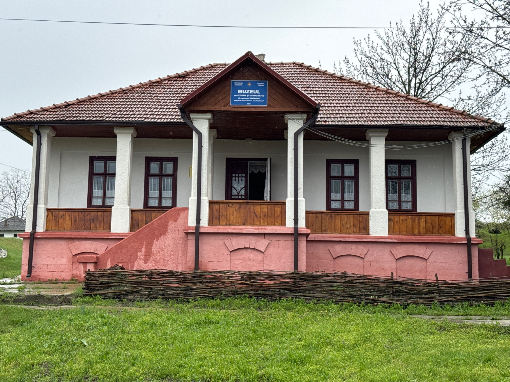
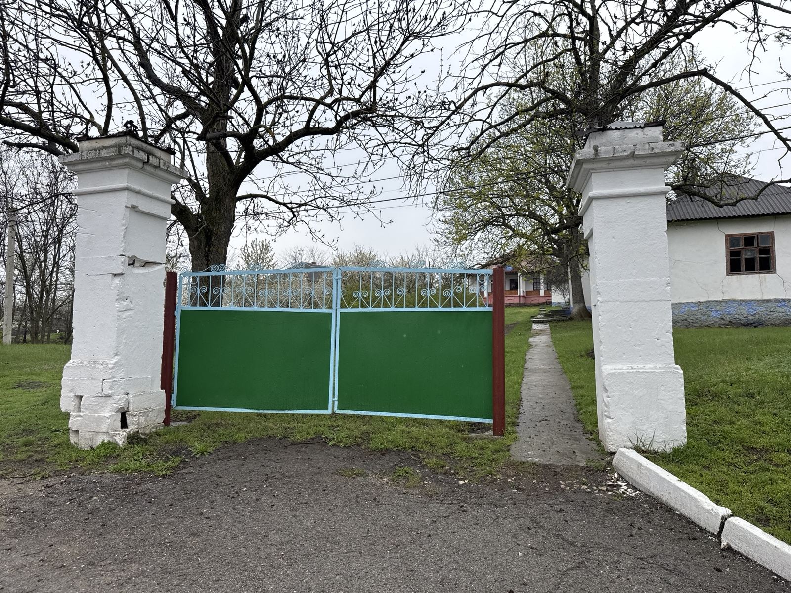
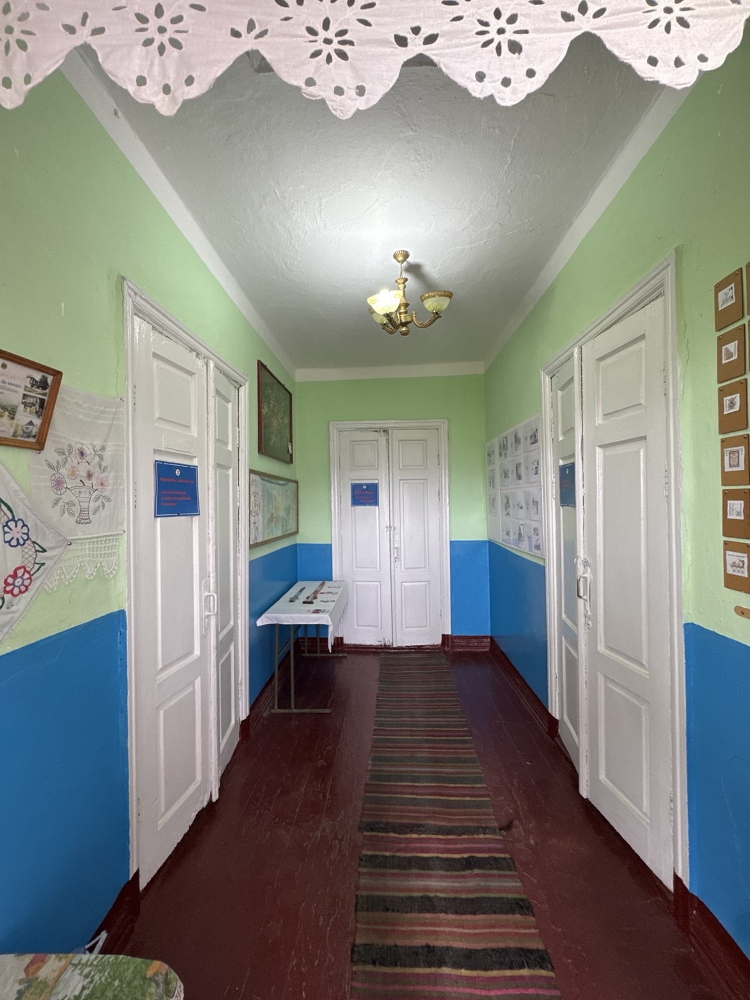
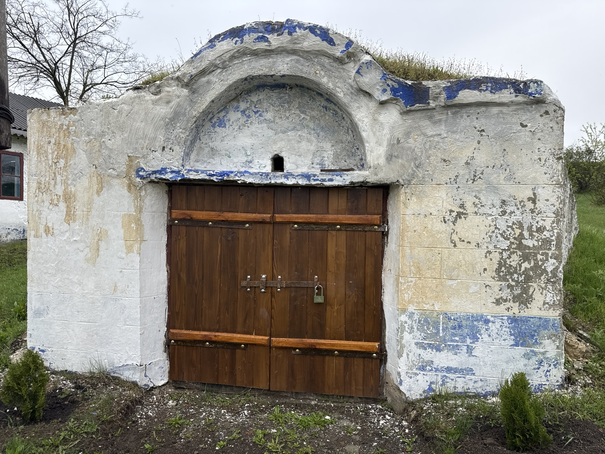
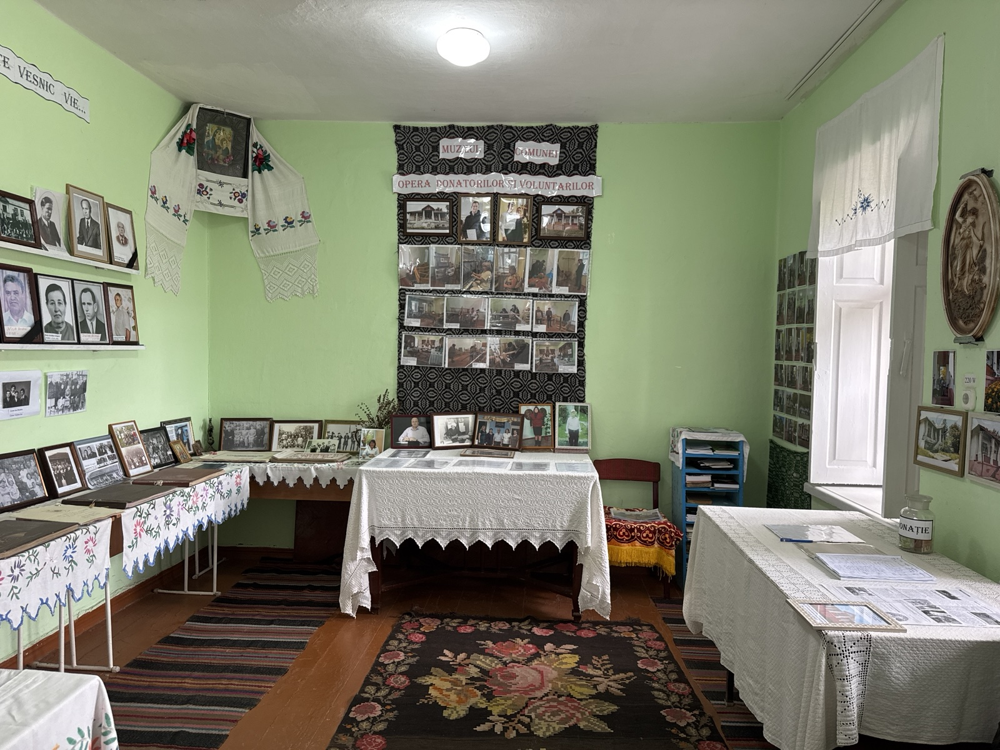

La 7 km de traseul principal Chișinău–Rezina, trecând prin satul Busăuca, drumul te aduce la Ghiduleni. În marginea satului te întâmpină un parc și o estradă de vară frumos amenajată; dincolo de primărie, alți patru mesteceni înalți străjuiesc gospodăria familiei Cociorva. La douăzeci de pași se află muzeul de istorie și etnografie, adăpostit în casa-conac „Ion Croitoru”.
La intrarea în curte se mai păstrează doi stâlpi de piatră, acoperiți cu tablă ornată ca pe vremuri. În dreapta stă o clădire ridicată în perioada sovietică, unde au învățat mulți dintre copiii satului. În stânga, o groapă năpădită de tufari — acolo trebuia să se înalțe o școală nouă, pe care copiii din Ghiduleni nu au mai apucat-o.
Tot aici se afla o fântână săpată și înălțată din piatră, cu cumpănă — dispărută, cu timpul. Mai încolo, o anexă învechită păstra cerealele; din lipsă de spațiu, Croitoru însuși a mutat cândva două clase de elevi la școala de lângă biserică.

Casa-conac a fost construită între anii 1930 și 1933, pe fosta moșie a boierului Buzdugan — socrul lui Ion Croitoru. Este o pildă de arhitectură rurală, caracteristică sfârșitului de secol XVIII și începutului de secol XIX.
Se aseamănă mult cu casa-muzeu Donici de la Orhei: același fronton, același cerdac, aceleași șase coloane. Ferestrele poartă tiparul unui timp uitat, iar ușa de la intrare e ornamentată tradițional. Acoperișul păstrează țigla roșie a vremii, cu ulucile de tinichea pentru scurgerea apei.
Ion Croitoru a fost învățător și director de școală — „Izvorul” satului, darul cunoștințelor pentru cei tineri. Odată cu venirea regimului comunist, a fost ridicat de acasă și dus în gulagul siberian, unde și-a găsit sfârșitul. Casa lui a rămas însă în picioare și astăzi îi poartă mai departe numele și memoria.

Un coridor duce către trei camere și două cămăruțe mici. În una se păstrau dulcețile — la mare modă pentru boieri când primeau oaspeți; cea de-a doua, ridicată mai târziu, a servit drept cabinet de chimie.
S-au păstrat aceleași uși puternice, aceeași podea și aceleași obloane la ferestre — toate, cerințe ale timpului. Astăzi, încăperile adăpostesc Casa Mare a satului, portul popular, uneltele de gospodărie și documentele adunate de-a lungul anilor.
„Ei l-au dus pe Croitoru / În siberiile de gheață, / Nimeni să nu-i afle Dorul / De știință și… de viață!”
Curtea largă a conacului începe cu doi stâlpi puternici de piatră, ornați cu tinichea, la fel ca ulucile. Sub casă s-a păstrat un beci foarte încăpător, cu patru scări și o ușă cu zăvor.
Pe vremea când clădirea slujea drept școală, în beci se țineau murăturile și proviziile pentru elevii de la internat — aproape cincizeci de copii veniți din satul Roșcana.

Multe dintre exponate au ajuns aici prin mâinile sătenilor — fotografii de familie, documente și obiecte dăruite ori încredințate muzeului. O sală întreagă cinstește donatorii și voluntarii care țin vie memoria comunei.
